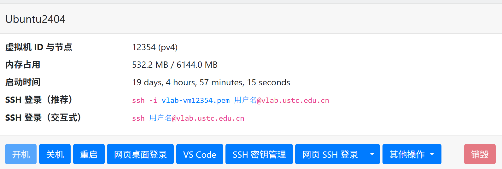

补充材料
Windows Subsystem for Linux (WSL 2) 指南
WSL 2 允许你在 Windows 上运行原生的 Linux 二进制可执行文件。对于不想折腾双系统或虚拟机的同学，这是 最推荐 的本地开发环境。
1. 一键安装
在 Windows 10 (版本 2004 及更高，内部版本 19041 及更高) 或 Windows 11 中，以管理员身份打开 PowerShell 或 Windows Terminal，输入：
# 如果之前未安装过 WSL，此命令将启用所需功能并安装 Ubuntu
wsl --install
# 如果想列出可用的分发版
wsl --list --online
# 如果想安装特定的分发版（如 Ubuntu 24.04）
wsl --install -d Ubuntu-24.04默认会安装 Ubuntu。安装完成后，你需要重启电脑并设置 Linux 用户名和密码（注意：输入密码时屏幕不会显示字符）。
更多详情请参考微软官方文档：安装 WSL
2. 注意事项与常用命令
- 版本检查：在 PowerShell 中运行
wsl -l -v确保版本显示为2。若是1，请使用wsl --set-version <distro> 2升级。 - 文件互访：
- 在 Windows 访问 Linux 文件：在资源管理器地址栏输入
\\wsl$。 - 在 Linux 访问 Windows 文件：路径通常在
/mnt/c/Users/...。
- 在 Windows 访问 Linux 文件：在资源管理器地址栏输入
- 性能优化：WSL 2 使用真正的 Linux 内核。建议将代码放在 Linux 文件系统（如
~/projects）中，不要在/mnt/c/下进行重型编译任务（如内核编译），这会导致速度极慢。 - 关机：如果 WSL 占用内存过多，可以手动强制关闭：
wsl --shutdown。
3. 配合 VS Code (推荐方案)
在 Windows 侧安装 VS Code，并搜索安装插件：WSL。
之后在 WSL 终端输入 code .，即可开启丝滑的开发体验。
如果你发现
wsl --install 报错，请检查 BIOS 中是否开启了 虚拟化技术 (Virtualization)。VLab 云实验平台使用指南
科大 VLab (vlab.ustc.edu.cn) 为每位同学提供了强大的云端虚拟机，环境统一且不占用本地资源。
1. 创建环境
- 登录平台后，选择 Ubuntu 24.04 或 Ubuntu 22.04 镜像创建虚拟机，并输入一个虚拟机名称。
- 创建好虚拟机后，稍等 3 分钟，然后将虚拟机开机。

- 下面列出了多种使用方式，可根据个人喜好选择。
2. 远程连接与访问规则
由于安全策略，VLab 的 IP 通常只能在校内访问。
- 校外访问：请务必先连接 校内 VPN (SSLVPN)。
- 网页终端：虽然网页自带 网页桌面，但由于延迟和粘贴不便，强烈建议使用 SSH 连接。
VLab 磁盘空间有限，默认只有 20GB-40GB，请不要在里面存储大量的无关视频或大数据集。
完整的使用指南请参考官方文档：VLab 使用手册
SSH：连接你的开发世界
SSH (Secure Shell) 是系统程序员的“传送门”。学会它，你就可以在本地舒适的编辑器里操控任何一台远程服务器。
1. 基础连接
打开你电脑的终端（CMD/PowerShell/Terminal），输入：
# 格式：ssh 用户名@IP地址
ssh username@202.38.xxx.xxx2. VS Code Remote SSH
这是目前最高效的开发流程：
- 安装插件 Remote - SSH。
- 点击左下角蓝色图标
><->Connect to Host...。 - 输入
username@ip。 - 效果：你可以像编辑本地文件一样使用 VS Code 所有的功能（语法高亮、自动补全、插件），但代码实际上运行在远程服务器（VLab/WSL）上。
3. 告别密码：免密登录
每次输入密码很痛苦？
- 本地生成密钥对：
ssh-keygen -t ed25519(一路回车)。 - 拷贝给服务器：
ssh-copy-id username@ip。 之后，连接时将不再询问密码。
4. 极致配置：.ssh/config
你不需要记住复杂的 IP！编辑你的 ~/.ssh/config (Windows 在 C:\Users\YourName\.ssh\config)：
Host my-lab
HostName 202.38.xxx.xxx
User root
Port 22
IdentityFile ~/.ssh/id_ed25519 # 可选用法：以后只需输入 ssh my-lab 即可连接。
5. 常见问题排查 (Troubleshooting)
- SSH 免密失败：确认本地
.ssh/authorized_keys权限为 600（虽然 WSL/VLab 对此宽松，但 SSH 协仪本身很敏感）。 - Connection Timed Out：通常是网络问题。如果是 VLab，请检查 VPN 是否连接。
- VS Code “Setting up SSH Host” 卡死：通常是远程端在初始化下载 VS Code Server。请耐心等待，或者检查网络连接。
服务器永不掉线：Tmux 简要教程
当我们断开 SSH 时，运行在服务器上的程序往往会随之关闭。Tmux (Terminal Multiplexer) 可以让程序在一个虚拟窗口中持续运行，直到你手动关闭。
1. 核心操作
- 安装：
sudo apt install tmux(Ubuntu 默认大部分已带)。 - 新建窗口：
tmux。 - 离开窗口 (Detach)：按
Ctrl + B后，再按D。此时你的代码在后台运行！ - 重新进入 (Attach)：
tmux attach。
在实验过程中（尤其是耗时较长的程序运行），极其强烈建议开启一个
tmux 窗口。这能有效防止因无线网络波动产生的 SSH 断连导致实验数据丢失。